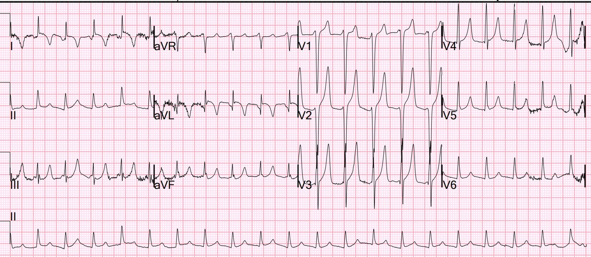
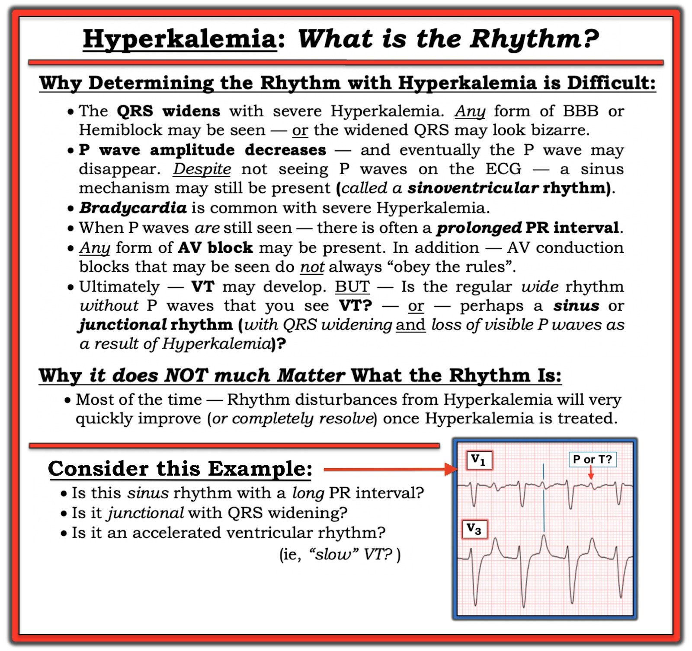

27/02/2023 — Những sóng T tối cấp này là gì, kèm ST chênh lên và sóng T đảo ngược ở aVL, ST chênh xuống ở các chuyển đạo dưới?
Bản dịch tiếng Việt của bài "What are these hyperacute T waves, with STE and T-wave inversion in aVL, and STD in inferior leads?" – Dr. Smith’s ECG Blog. Giữ nguyên toàn bộ 4 hình ảnh của bản gốc.
Tôi đang đọc điện tâm đồ trên hệ thống và bắt gặp bản ghi này:


Bạn nghĩ gì?
Đây là hình ảnh chẩn đoán tăng kali máu (hyperkalemia). Tăng kali máu có thể gây ra đủ loại hình ảnh giả STEMI hoặc giả OMI, bao gồm ST chênh lên, ST chênh xuống và sóng T lớn.
Các sóng T này cao nhưng có đáy hẹp và đoạn ST tương ứng dẹt (xem chuyển đạo V4). Ngoài ra, không có sóng P rõ ràng và đây là một hệ quả khác của tăng kali máu. Thực tế, đôi khi nút xoang vẫn đang hoạt động và đóng vai trò chủ nhịp nhưng không thấy sóng P nào!! Hiện tượng này được gọi là nhịp xoang-thất (sino-ventricular rhythm). Xem 3 bài khác về nhịp xoang-thất này
Kết quả K trả về là 6.2 mEq/L.
Bệnh nhân đã được điều trị.
Bệnh nhân được loại trừ nhồi máu cơ tim bằng troponin.
Không ghi điện tâm đồ theo dõi nào!!
Xem nhiều ví dụ về giả STEMI do tăng kali máu ở hai bài sau:
Acute respiratory distress: Correct interpretation of the initial and serial ECG findings, with aggressive management, might have saved his life. (Suy hô hấp cấp: Đọc đúng các dấu hiệu trên điện tâm đồ ban đầu và các điện tâm đồ liên tiếp, kèm xử trí tích cực, có lẽ đã cứu được mạng sống của anh ấy.)
“Steve, what do you think of this ECG in this Cardiac Arrest Patient?” (“Steve, anh nghĩ gì về điện tâm đồ này ở bệnh nhân ngừng tim này?”)

===================================
BÌNH LUẬN CỦA TÔI, bởi KEN GRAUER, MD (27/2/2023):
===================================
Một trong những “Cấp cứu điện tâm đồ” thường gặp nhất đòi hỏi nhận biết kịp thời tăng kali máu — với các mục tiêu của chúng ta là: i) Tránh chẩn đoán sai (tức là nhầm sóng T cao, nhọn với sóng T de Winter — như dường như đã xảy ra trong ca hôm nay); và, ii) Điều trị kịp thời tình trạng có thể đe dọa tính mạng này (tức là bằng calci) — thứ thường nên được cho trước khi xét nghiệm xác nhận tăng kali máu, vì dùng calci tĩnh mạch một cách thận trọng là an toàn — và không điều trị kịp thời bệnh nhân thì có nguy cơ mất bệnh nhân.
Chúng tôi đã trình bày rất nhiều ví dụ về tăng kali máu trên Dr. Smith’s ECG Blog. Ca hôm nay trình bày thêm một vài trong số “Nhiều Gương Mặt” của tăng kali máu mà chúng ta cần nắm được. Tôi xin bổ sung những điều sau vào phần bàn luận của Dr. Smith:
- Như thường lệ — tôi ưu tiên bắt đầu đánh giá bằng một Cách tiếp cận hệ thống. Phân tích mô tả điện tâm đồ trong ca hôm nay cho thấy nhịp nhanh QRS hẹp, đều với tần số ~130/phút, không có dấu hiệu rõ ràng của sóng P xoang.
- Biên độ QRS có vẻ tăng ở một số chuyển đạo ngực (tức là sóng S rất sâu ở chuyển đạo V1,V2 — phức bộ đẳng điện lớn ở V3).
- Dường như có sóng Q ở chuyển đạo aVL — dù nhiễu ở chuyển đạo chi khiến khó đánh giá điều này.
- Như Dr. Smith đã nêu — sóng T ở nhiều chuyển đạo cao, nhọn và có đáy hẹp. Điều này đặc biệt đúng ở chuyển đạo V2,V3 — nơi biên độ sóng T vượt quá 15 mm! Đáng lưu ý — các sóng T này đối xứng, với nhánh lên và nhánh xuống của sóng T có độ dốc tương tự nhau.
- ĐIỀU CỐT LÕI: Như Dr. Smith đã nêu — điện tâm đồ này chẩn đoán tăng kali máu cho đến khi bạn chứng minh được điều ngược lại.
CÂU HỎI:
- Nhịp là gì?
- Với sóng T cao như vậy và không có sóng P — Tại sao QRS không rộng?
- Tại sao K+ huyết thanh không cao hơn 6.2 mEq/L?
- Tại sao lại có sóng T đảo ngược ở chuyển đạo I và aVL?
- Cuối cùng — Liệu có điều gì khác đang xảy ra với bệnh nhân này không?
===================================
Nhịp trong ca hôm nay LÀ GÌ?
Dr. Smith cho rằng nhịp trong ca hôm nay là nhịp xoang-thất (sinoventricular rhythm) — vì trong tăng kali máu, hoạt động của nút xoang thường vẫn tiếp tục (ít nhất là trong một thời gian) dù sóng P đã biến mất trên điện tâm đồ.
- Trong ca hôm nay — tôi hoàn toàn thừa nhận rằng tôi không biết chắc nhịp là gì. QRS hẹp — và không thấy sóng P. Nhưng tần số là ~130/phút — hơi nhanh đối với nhịp nhanh xoang. Vì vậy NẾU đây là nhịp nhanh xoang với nhịp xoang-thất — thì chúng ta phải giải thích TẠI SAO tần số lại nhanh như vậy.
- Mặt khác — nhịp có thể là nhịp nhanh bộ nối …
- Cuối cùng — gần như trông có vẻ có 2 sóng lệch dương cách đều nhau ở chuyển đạo aVR, mà nếu đúng thì có thể gợi ý cuồng nhĩ (AFlutter) 2:1.
- ĐIỀU CỐT LÕI: Về mặt thực hành — nhịp trong ca hôm nay là gì không quan trọng — vì NẾU bệnh nhân này được điều trị kịp thời bằng calci — dù nhịp này là gì thì nhiều khả năng nhất nó sẽ hết nhanh chóng.
Để nhắc lại vì sao việc xác định nhịp tim có thể khó khăn đến vậy khi có tăng kali máu đáng kể — tôi đã đăng lại Hình 1 từ Bình luận của tôi trong bài ngày 16 tháng Một năm 2022 trên Dr. Smith’s ECG Blog.


TẠI SAO QRS không rộng?
Tôi nghĩ sẽ hữu ích khi nắm được trình tự “kinh điển” (textbook) của các dấu hiệu điện tâm đồ gặp trong tăng kali máu ở các mức độ tăng dần. Dù hoàn toàn thừa nhận rằng “không phải bệnh nhân nào cũng đọc sách giáo khoa” — tôi nhận thấy việc nắm được những khái quát về điện tâm đồ trong Hình 2 là cực kỳ hữu ích.
- XIN NHẤN MẠNH — Không phải bệnh nhân nào cũng theo trình tự thay đổi điện tâm đồ được trình bày dưới đây trong Hình 2. Ví dụ — một số bệnh nhân có thể xuất hiện mọi thay đổi ngoại trừ QRS giãn rộng. Những bệnh nhân khác có thể không có sóng T nhọn — hoặc chỉ có dấu hiệu này như một thay đổi muộn. Và dù tăng kali máu rõ rệt — một số bệnh nhân có thể hoàn toàn không có thay đổi nào trên điện tâm đồ.
- Dù đã nói như trên — Qua nhiều năm, tôi nhận thấy Hình 2 hữu ích như một hướng dẫn mà thực sự đúng ở một tỷ lệ đáng kể bệnh nhân.
- T.B. (P.S.): Có những lúc mà ngay cả trước khi có kết quả K+ huyết thanh từ phòng xét nghiệm — bạn đã biết từ điện tâm đồ rằng có tăng kali máu nặng (đe dọa tính mạng). Ví dụ — nhịp chậm rõ rệt kèm các dạng blốc AV tiến triển bất thường — hoặc nhịp chậm rõ rệt không thấy sóng P — hoặc QRS giãn rộng rõ rệt với hình dạng “không ra hình thù” — tất cả đều là chỉ dấu trên điện tâm đồ cho thấy cần calci tĩnh mạch ngay lập tức cho đến khi các hình ảnh điện tâm đồ này cải thiện.

Tại sao K+ huyết thanh không cao hơn 6.2 mEq/L?
Dù không có hoạt động nhĩ và sóng T cực cao ở nhiều chuyển đạo — giá trị K+ huyết thanh 6.2 mEq/L lại không quá cao. Dựa vào điện tâm đồ trong ca hôm nay — tôi đã dự đoán một giá trị cao hơn. Có một số lý do có thể giải thích giá trị K+ huyết thanh thấp hơn dự kiến này:
- Như đã nhấn mạnh ở trên — trình tự “kinh điển” trình bày ở trên trong Hình 2 không phải bệnh nhân nào cũng tuân theo một cách hoàn hảo.
- Một số tình trạng (ví dụ nhiễm toan ceton do đái tháo đường (DKA)) có thể đi kèm sự dịch chuyển K+ nhanh giữa nội bào và ngoại bào — khiến giá trị huyết thanh có thể thay đổi nhanh.
- Thường thiếu ghi chép về việc điện tâm đồ nào được ghi vào thời điểm lấy mẫu máu nào (và liệu đã bắt đầu điều trị gì hay chưa). Vì vậy giá trị K+ 6.2 mEq/L có thể (hoặc có thể không) tương ứng sát với thời điểm ghi điện tâm đồ hôm nay.
Tại sao có sóng T đảo ngược ở chuyển đạo I và aVL?
Nhiều sự chú ý tập trung vào hình ảnh sóng T cao, nhọn và đỉnh sắc đi kèm tăng kali máu. Điều không thường được nhận ra — là đôi khi, bạn có thể thấy sóng T đảo ngược sâu, đối xứng và đỉnh sắc ở một số chuyển đạo. Điều này thường không phải do thiếu máu cục bộ — mà là một biểu hiện điện tâm đồ khác của tăng kali máu.
- Chẳng phải các sóng T đảo ngược sâu, đối xứng ở chuyển đạo I và aVL gần như là “hình soi gương đối nghịch” của các sóng T dương cao, đỉnh sắc ở chuyển đạo III và aVF sao?
Liệu có điều gì khác đang xảy ra?
Chúng ta được cho biết bệnh nhân trong ca hôm nay đã được loại trừ nhồi máu cơ tim — nhưng không ghi điện tâm đồ theo dõi nào. Theo ý kiến của tôi — Không ghi điện tâm đồ theo dõi sau khi điều trị tăng kali máu là một sai lầm!
- Điện tâm đồ của bệnh nhân tăng kali máu thể hiện tác động tổng hợp của hình dạng sóng ST-T nền trước khi xuất hiện sóng T cao, nhọn của tăng kali máu. Chỉ sau khi điều chỉnh tăng kali máu và ghi lại điện tâm đồ — bạn mới có thể xác định liệu có thay đổi sóng ST-T do thiếu máu cục bộ hay không.
- Điểm này đặc biệt liên quan trong ca hôm nay — vì sóng T ở nhiều chuyển đạo đặc biệt cao (và còn có sóng T đảo ngược sâu ở chuyển đạo I và aVL). XIN NHẤN MẠNH — Dù tôi nghi ngờ rằng mọi bất thường sóng ST-T sẽ trở về bình thường khi điều chỉnh tăng kali máu trong ca hôm nay — chúng ta không biết chắc điều này nếu không ghi lại điện tâm đồ.
- Lý do khác khiến điện tâm đồ trong ca hôm nay lẽ ra phải được ghi lại sau khi điều chỉnh tăng kali máu — là nhịp tim duy nhất được ghi nhận trong ca này là SVT ~130/phút không có sóng P xoang. Chúng ta không biết chắc nhịp là gì? Và, không có ghi chép nào cho thấy cơn nhịp nhanh đã hết.